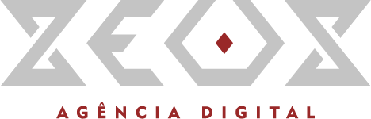
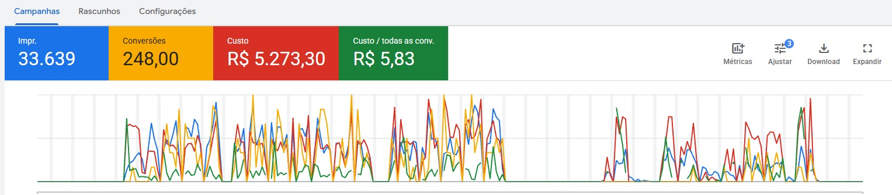
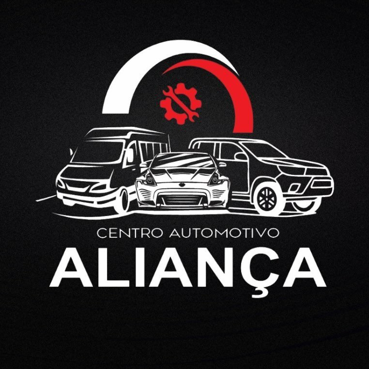
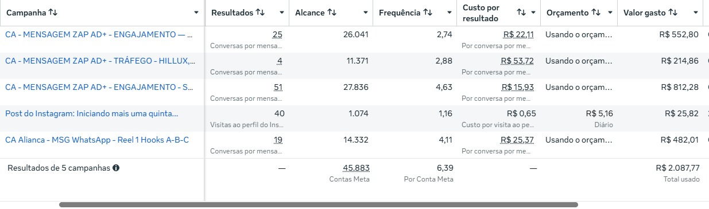
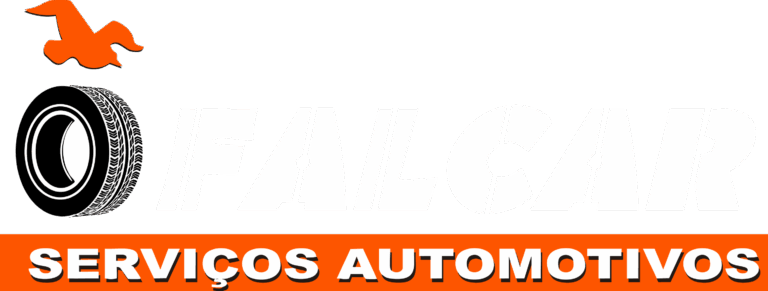
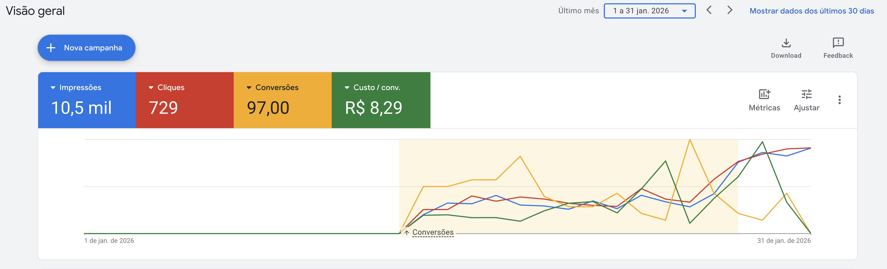

Procura local
Busca por oficina e serviços na área de atendimento de cada unidade.

Demanda no Google. Atendimento organizado.
Controle do que acontece em cada loja.
A estratégia começa no momento em que o motorista procura uma solução para o carro.
Campanhas de pesquisa no Google conectam essa procura à unidade certa. Cada loja terá sua região, seus serviços e seu caminho de atendimento definidos.
O primeiro foco é captar procura por serviços que vocês realmente atendem e acompanhar o contato até o orçamento.
Busca por oficina e serviços na área de atendimento de cada unidade.
Serviços claros, identificação da loja e acesso direto ao atendimento.
Histórico, responsáveis e organização das oportunidades recebidas.
Registro de orçamentos e vendas para entender o resultado por loja.
Estrutura de campanhas por unidade, seleção de buscas, segmentação geográfica e ajustes com base no desempenho.
Uma presença objetiva para apresentar os serviços e encaminhar o motorista à loja correta.
Centralização do histórico dos contatos, dados dos clientes e atribuição de responsáveis pelo atendimento.
Acompanhamento de investimento e conversões, com retorno da equipe sobre qualidade dos contatos, orçamentos e vendas.
Site completo, aplicativo e ficha técnica por placa são possibilidades futuras, com escopo e orçamento próprios. Facebook e Instagram podem ser avaliados em uma etapa posterior.
Aquisição de clientes no setor automotivo. Resultados de campanhas da JP Autopeças, Aliança e Falcar.
Cubatão, SP



Conversas: 25 + 4 + 51 + 19 = 99. Investimento dessas campanhas: R$ 552,80 + R$ 214,86 + R$ 812,28 + R$ 482,01. A campanha de visitas ao perfil, com 40 visitas e R$ 25,82, fica fora do cálculo.

Serviços automotivos

Confirmamos serviços prioritários, endereço, região, horários e responsáveis de cada loja.
Organizamos acessos, página de captura, campanhas e o caminho do contato até o atendimento.
Campanhas entram no ar após configuração, validação e aprovação da plataforma.
Cruzamos os dados dos anúncios com o retorno das lojas para orientar os próximos ajustes.
Vocês terão uma equipe próxima para conectar a aquisição de clientes à realidade das duas lojas.
Direção da estratégia e estruturação da operação de aquisição.
Sócio da Zeus. Relacionamento e acompanhamento próximo dos clientes.
Condições propostas a partir da conversa de 9 de setembro. Gestão e verba de anúncios são investimentos separados.
R$ 2.000 em gestão Zeus
+ R$ 2.000 em anúncios no Google
A verba de mídia é destinada aos anúncios e não compõe a remuneração da agência. O pacote inicial contempla gestão, página de captura e CRM integrado ao WhatsApp.
Início, condições de pagamento e demais termos serão definidos na formalização. Volume de contatos e prazo para os primeiros resultados variam conforme a operação.
Monique, este é o plano para levar à conversa com a direção: presença na busca, atendimento organizado e investimento visível por loja.
Com a proposta aprovada, alinhamos os dados das unidades, os acessos e a data de início.
Rever investimento ↑